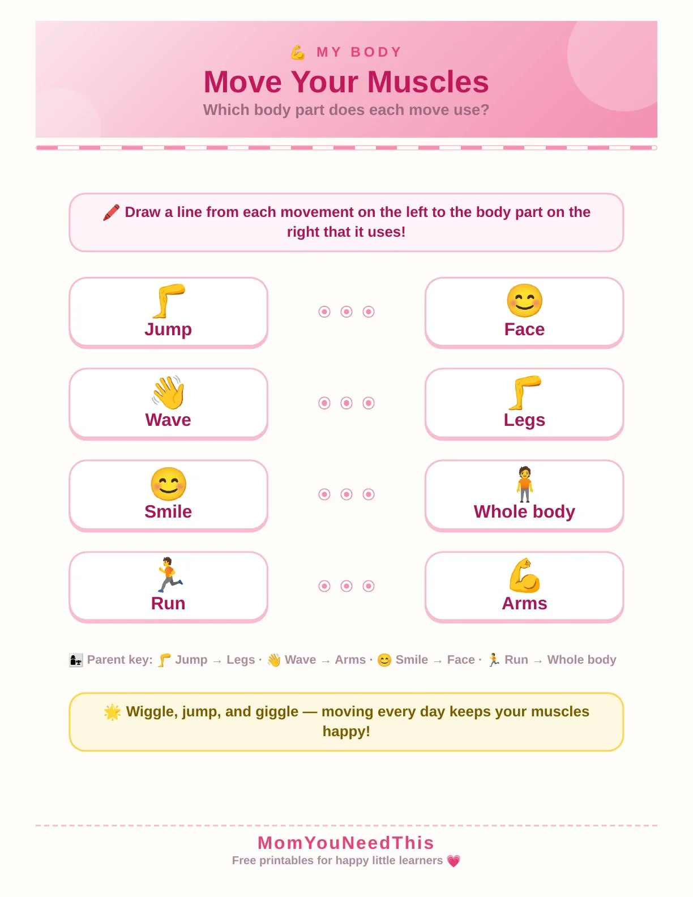

💪 Muscles & Movement Wiggle, Stretch & Grow Strong
Muscles help us run, jump, dance and hug. These active learning pages connect body science with joyful movement that gets little bodies wiggling.
Quick Answer
This free printable muscles and movement activity helps toddlers and preschoolers (ages 2–5) learn how muscles work: muscles move the body by pulling on bones, they work in pairs (one pulls one way, its partner pulls back), and there are more than 600 of them. Kids match muscles to the moves they power and try movement challenges with their own bodies. Download and print at home with no signup needed.
At a Glance
- Ages: Toddlers and preschoolers (ages 2–5)
- Activity: Learning how muscles work; trying movement challenges
- Skills: Body science and gross motor play
- Format: Printable worksheet (PDF)
- Cost: Free, no signup
This is the rare worksheet best done standing up. Muscle science is learned in the body, not on the page: a child who has just felt their biceps bunch while lifting something heavy does not need the word explained. Print the pages, clear a little floor, and let every muscle on the sheet get demonstrated live.
💪 Explore Muscles & Movement
Learn how muscles work, try movement challenges, and match muscles to the moves they power.
💡 How To Use This Activity
Print these pages, then get out of the chair: every muscle on the sheet gets tried out loud — flex, stretch, jump, balance. A few minutes of moving between pages keeps the science in their bodies, where it belongs, instead of only on paper. The print button opens the full-size page in a new tab if you prefer to print from there.

🖨️ Download Your Free Muscles & Movement Printable
Learn how muscles work, try movement challenges, and match muscles to the moves they power. Print it out, grab the crayons, and you're ready — no signup needed.
⬇️ Download Free Printable 🖨️ Print🎁 Free printable for toddlers & preschoolers
💪 How Muscles Actually Work
Muscles can only pull. That is the whole secret. A muscle shortens and pulls a bone toward it — it can never push the bone back. So muscles work in teams of two: the biceps pulls your forearm up to lift, and the triceps, its partner on the other side of the arm, pulls it back down. Every bend in the body has this pair of rivals cooperating.
There are more than 600 muscles in a human body, and they are not all for moving around. The heart is a muscle that never gets a day off. Tiny muscles move the eyes — the busiest muscles of all. Muscles in the skin make goosebumps. Even smiling is a team event, using about a dozen muscles at once.
Muscles grow by being used. When your child jumps, climbs and carries, their muscles get tiny amounts of damage that the body repairs stronger — that is literally how muscles grow. Rest and food are part of the system too: muscles are built during sleep and meals, and merely rehearsed during play.
The biggest muscle is the one your child is sitting on (the gluteus maximus, for climbing and standing up), and pound for pound the strongest is in the jaw. Both facts are checkable at the dinner table, which is where most children prefer their science anyway.
❓ Muscles & Movement FAQs
What activities are included in Muscles & Movement?
This page collects our free muscles and movement printables in one place: learning how muscles work (they pull bones, and they work in pairs), trying movement challenges, and matching muscles to the moves they power. Download the printable below and start learning right away.
Are these activities really free?
Yes — every printable on MomYouNeedThis is 100% free to download and print. No signup, no payment, just tap the download button. This set is designed to be used standing up — clearing a small patch of floor is the only preparation it needs. This set is designed to be used standing up — clearing a small patch of floor is the only preparation it needs.
How do I use these activities with my child?
Print these pages, then get out of the chair: every muscle on the sheet gets tried out loud — flex, stretch, jump, balance. A few minutes of moving between pages keeps the science in their bodies, where it belongs. Have your child feel a muscle while it works (a biceps mid-lift, a calf mid-jump): that bunching under the skin is the lesson.